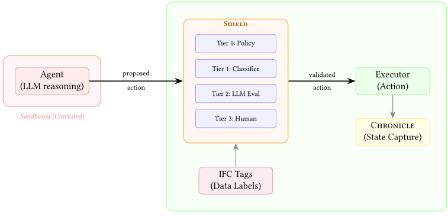

Parallax：会思考的 AI Agent 为何绝不能亲自执行动作——架构级安全的自主执行范式
论文指出，主流 Agent 安全做法——在系统提示中写安全指令——与威胁处于同一抽象层，一旦推理系统被 prompt injection 攻破便完全失效。作者提出 Parallax 范式，含四原则：Cognitive-Executive Separation（推理进程与执行进程结构性分离）、带 Graduated Determinism 的对抗性验证（独立四层验证器 Shield：确定性策略、双分类器、预算受限 LLM 评估、人工审批）、Information Flow Control（敏感标签随工具链传播）与 Reversible Execution（破坏性动作前快照可回滚），并开源 Go 实现 OpenParallax。评测采用 Assume-Compromise Evaluation，绕过 LLM 直接注入工具调用：280 个对抗用例中默认配置拦截 98.9% 且零误报，最高安全配置拦截 100%（误报率 36%）。对任何让 Agent 执行工具调用的团队，这是执行安全架构与安全评测方法的直接参考。
现有 Agent 安全主要依赖 prompt 级护栏（在系统提示中嵌入安全指令），但护栏与威胁共享同一计算基底，模型无法可靠区分指令与数据，且在长上下文退化、记忆投毒、多 Agent 传播下进一步失效；当推理系统被完全攻破时，prompt 护栏提供零保护。论文要解决的问题是：如何为具备真实执行能力（文件操作、shell、网络请求、数据库修改）的自主 Agent 提供不依赖推理系统自身状态的架构级安全保障。
提出 Parallax 范式（四原则）：1) Cognitive-Executive Separation——Agent 推理进程沙箱化、零执行面，仅能通过 gRPC 向可信 engine 进程提交动作提案；2) Adversarial Validation with Graduated Determinism——独立验证层 Shield 分四层（Tier 0 确定性 YAML 策略、Tier 1 启发式规则+DeBERTa 双分类器、Tier 2 预算受限的独立 LLM 评估并嵌入 canary token、Tier 3 人工审批），全部 fail-closed；3) Information Flow Control——数据在源头打敏感标签（PUBLIC/INTERNAL/CONFIDENTIAL/RESTRICTED）并随操作传播，检测多步工具链外泄；4) Reversible Execution——破坏性动作前由 Chronicle 捕获状态快照支持回滚。另含 Validator Immutability（验证器不可被 Agent 读写）、Dynamic Tool Surface Reduction（按需动态加载工具组以缩小攻击面）、多 Agent 子进程隔离与无信任继承、MCP 透明验证代理集成。参考实现 OpenParallax 为 Go 编写的 OS 进程级隔离架构。
Assume-Compromise 评测（绕过 LLM 直接注入工具调用）：280 个对抗用例（9 类攻击）中，默认配置拦截 277 个（98.9%）且 50 个合法动作零误报（0% FP）；最高安全配置拦截 100%，但误报率 36%（50 个合法动作被拦 18 个）
被拦截攻击的层级分布：Tier 0+1（确定性机制）解决 73.6%，Tier 2（LLM 评估）解决 26.1%，Tier 3（人工升级）0.4%
LLM 模式预实验中，Claude Sonnet 4.6、Claude Haiku 4.5、Llama 3.1 8B 在所有配置下攻击成功率均为 0%（模型自身安全训练拒绝有害请求）；Qwen 2.5 3B 手动测试则顺从有害请求，验证'完全妥协 Agent'假设的现实性
Tier 1 DeBERTa 分类器在约 16,000 样本、29 类攻击的 prompt injection 检测数据集上微调，held-out 测试集准确率 98.8%；当前 purego 实现带来约 1.9s 延迟，计划 CGo sidecar 降至 50ms 以下
Tier 3 人工升级路径：12 个测试用例中 4 个走完整路径且结果正确，其余 8 个被 Tier 0/1 更早拦截；加入 ESCALATE 未在 280 用例主套件上引入回归
区别于 prompt 护栏、RLHF/Constitutional AI、输出过滤，以及只隔离 Agent 生成代码的沙箱方案（Google Agent Sandbox、E2B 等），Parallax 将沙箱对象改为推理系统自身，实现推理/执行完全能力解耦——不存在既规划又执行的'特权 LLM'；将动态工具加载从性能优化手段（如 Claude Code 的 ToolSearch、MemTool）形式化为安全原则（时间维度的最小权限）；首次将 IFC 标签传播机制具体化用于 Agent 数据流；提出 Assume-Compromise Evaluation 评测方法学。相对 SEAgent 等应用层 MAC 方案，其贡献在于 OS 进程级地址空间分离，使验证器本身不可被推理系统触及（抵御 C7 类针对验证器的攻击）。
相关度级别：high
命中能力域：3.3 Agent 架构与工具使用 | 3.4 多智能体协作 | 3.5 评测与可靠使用
理由：团队构建带工具调用能力的 Agent（代码生成/审查、测试辅助、知识库问答），Agent 需读写文件、执行命令、访问内部数据，正处在本论文定义的'执行安全缺口'威胁模型内。论文直接命中 3.3（Agent harness 与工具调用架构、动态工具加载、MCP 工具协议集成）与 3.5（可靠性/安全防护、Assume-Compromise 评测方法学、人机协作审批流）；其多 Agent 子进程隔离与无信任继承的编排约束对 3.4 的多 Agent 工程有直接指导意义。此外，论文对 prompt 护栏失效机理（长上下文退化、间接注入、多 Agent 传播）的系统分析，为团队'如何正确使用 LLM'提供了重要的架构层补充证据：安全不能只靠提示词。
建议动作：深入精读并做内部分享
arXiv:2604.12986v1 [cs.CR] 2026年4月14日
自主 AI Agent 正迅速从实验性工具转变为实际运营的基础设施，据预测，到2026年底，80%的企业应用将嵌入 AI 副驾驶（copilot）。随着 Agent 获得执行真实世界动作的能力（读取文件、运行命令、发起网络请求、修改数据库），一个根本性的安全缺口随之出现。当前主流的 Agent 安全方法依赖于提示级防护栏（guardrails）：即以自然语言指令的形式运作，其抽象层次与它们试图缓解的威胁处于同一层级。本文论证，对于具备执行能力的 Agent 而言，基于提示的安全性在架构上是不充分的，并提出 Parallax——一种以四项原则为基础的安全自主 AI 执行范式：认知-执行分离（CognitiveExecutive Separation），从结构上阻止推理系统执行动作；分级确定性的对抗验证（Adversarial Validation with Graduated Determinism），在推理与执行之间设置一个独立的多层验证器；信息流控制（Information Flow Control），使数据敏感度标签在 Agent 工作流中传播，以检测上下文相关威胁；以及可逆执行（Reversible Execution），捕获破坏性操作之前的状态，以便在验证失败时实现回滚。我们推出了 OpenParallax——一个用 Go 语言编写的开源参考实现，并采用假定失陷评估（Assume-Compromise Evaluation）对其进行评估；该方法完全绕过推理系统，在 Agent 完全失陷的情况下对架构边界进行测试。在涵盖九个攻击类别的280个对抗性测试用例中，Parallax 在默认配置下以零误报拦截了98.9%的攻击，在最高安全配置下拦截了100%的攻击。当推理系统被攻陷时，提示级防护栏无法提供任何保护，因为它们仅存在于已被攻陷的系统之内；而无论何种情形，Parallax 的架构边界依然稳固。
AI Agent 安全；特权分离；对抗性验证；自主执行；信息流控制；Agentic AI 安全
自主 AI Agent 的快速部署，是自大型机向网络化系统转型以来计算领域最重大的变革之一。行业预测显示，到 2026 年底，40% 的企业应用将嵌入任务专用的 AI Agent [1]，而 AI 副驾驶（AI copilot）预计将出现在近 80% 的企业办公应用中 [2]。这些系统不再局限于生成内容或回答问题。它们会读取文件、执行 shell 命令、发起 API 调用、查询数据库、修改配置，并跨生产基础设施编排多步骤工作流。在消费领域，个人 AI Agent 如今正运行在用户的机器上
一种架构级安全的自主执行范式
Joel Fokou ID
独立研究者
并可访问本地文件系统、凭据和网络接口 [3]。
这种从生成式 AI 到智能体 AI（agentic AI）的转变，引入了一类与迄今为止大语言模型（LLM）安全文献所应对的风险在范畴上截然不同的安全问题。当 LLM 被用作对话式接口时，安全失效的最坏结果是生成有害或误导性内容。而当同一个 LLM 被嵌入到拥有执行权限的 Agent 中时，一次安全失效就可能导致数据外泄、凭据窃取、系统失陷，或关键资源遭到不可逆的破坏。这种区别不在于程度，而在于类别。Agent 具有能动性（agency）：即对世界采取行动的能力。安全方面的挑战在于，即使推理系统已经失陷，也要确保这种能动性得到安全的行使。
当前 AI Agent 安全的主流方法是我们所称的提示级护栏（prompt-level guardrailing）：即在 Agent 的系统提示（system prompt）中嵌入安全指令，指示模型拒绝危险请求、避免某些操作，并遵守使用政策。这种方法存在三个根本性缺陷。
首先，提示护栏与其试图缓解的威胁共享同一计算基底。模型通过同一注意力机制处理安全指令与对抗性输入，在受信任的指令与不受信任的数据之间不存在任何架构层面的区分。这正是使提示注入（prompt injection）成为可能的前提条件 [4]。正如 OpenAI 所承认的，语言模型没有用于区分指令与数据的可靠机制 [6]；美国国家标准与技术研究院（NIST）也已将通过间接提示注入实施的 Agent 劫持归类为 Agent 系统的核心威胁 [7]。2025 年末，有记录的针对企业 AI 系统的提示注入攻击尝试同比增长了 340% [8]，其中间接攻击目前占已观测事件的 55% 以上，且成功率比直接注入高出 20-30% [9]。
其次，提示护栏会随上下文的延长而退化。2025 年末至 2026 年初发表的研究表明，拥有较长对话历史的 Agent 明显更容易被操纵，因为累积的上下文可以通过渐进式的“切香肠”（salami slicing）攻击使模型的有效约束边界发生偏移 [10]。记忆投毒（memory poisoning）攻击能够植入跨会话持续存在的虚假指令，从而实际上将 Agent 转变为一种潜伏性威胁 [11]。
第三，提示护栏无法在多智能体（multi-agent）传播中幸存。在一个模型的输出成为另一个模型输入的多智能体系统中，在某一层成功的注入会贯穿传播到其后的每一层 [12]。安全测试表明，在单次提示注入事件中，攻击会传播到多智能体部署中 48% 的同时运行 Agent [9]。跨 Agent 信任利用（cross-agent trust exploitation）——即一个已失陷的 Agent 利用 Agent 间通信中的隐式信任来操纵另一个 Agent——已在生产级编码环境中得到演示 [13]。
这些并非理论上的担忧。2026 年初，被广泛部署的开源 Agent 框架 OpenClaw（GitHub 星标超过 340,000）被发现存在多个严重漏洞，其中包括利用推理与执行之间缺乏特权分离而实施的供应链攻击，导致超过 21,000 个实例暴露 [14]。某财富 500 强企业遭遇数据外泄，其原因是一句嵌入在供应商发票中的恶意句子使其内部 AI 助手将客户数据库转发到了一台外部服务器 [15]。这些事件表明，本文所应对的威胁模型并非假设性的，而是现实运作中的。
本文的核心论点是：Agent 安全无法通过任何在语言层面运作的机制来实现——无论是提示工程（prompt engineering）、输出过滤、宪法式 AI（Constitutional AI），还是基于人类反馈的强化学习（RLHF）。这些方法能够提升模型判断的质量，却无法约束其动作。它们就好比要求用户遵守某项安全策略，却不曾在操作系统层面强制执行该策略：对意外误用有效，对有动机的攻击者或系统性失效则无效。
我们转而提出：Agent 安全需要架构层面的强制执行（architectural enforcement），即无论推理组件处于何种状态都始终成立的系统结构属性。这一洞见借鉴了系统安全领域数十年来的成熟实践：
Parallax 将这些原则应用于 AI Agent 架构。其核心洞见可以简述为：对动作进行推理的系统必须在结构上无法执行这些动作，而执行动作的系统必须在结构上无法对动作进行推理，并在两者之间设置一个独立的、不可变的验证器（validator）。
本文的主要贡献如下：
本文其余部分的组织结构如下。第 2 节介绍 AI Agent 安全的背景知识，以及为 Parallax 提供理论依据的系统安全基础。第 3 节定义威胁模型。第 4 节阐述 Parallax 的四项原则及其推导出的安全属性。第 5 节描述 OpenParallax 参考实现。第 6 节报告我们的实证评估。第 7 节讨论相关启示与局限性。第 8 节将 Parallax 与现有方法进行对比定位。第 9 节概述未来研究方向，包括专门训练的评估模型、具身系统应用以及关键基础设施部署。第 10 节对全文进行总结。
本节综述 AI agent 安全的现状（第 2.1 节），以及为 Parallax 范式提供理论依据的系统安全原则（第 2.2 节）。
从对话式大语言模型（LLM）到智能体式 AI 系统的转变，带来了一类现有安全性文献难以应对的安全风险。这一区别是根本性的：对话式 LLM 产生的是内容；而智能体式系统产生的是行动。二者各自所需的安全属性分属截然不同的范畴。
LLM 安全性研究历来聚焦于模型输出的质量：减少有害内容的生成、缓解偏见、提升事实准确性，并使模型行为与人类偏好对齐 [22, 23]。这些工作所回答的问题是：“模型是否在生成正确的东西？”而智能体式安全问题则不同：“系统是否在做正确的事情？”在这里，“做”涉及文件操作、shell 命令执行、API 调用、数据库修改以及与外部服务的交互。
这一转变引出了 Willison [24] 所提出的“致命三要素”（Lethal Trifecta）：即（1）可访问私有数据、（2）会暴露于不可信内容、（3）存在经由外部请求的数据外泄向量，这三者同时具备。当一个智能体同时拥有这三项属性时（大多数生产环境中的智能体正是如此），无论其安全训练或提示工程的质量如何，它在结构上都易于遭受攻击。
OWASP 基金会通过发布两套各自独立的安全框架，认可了这一范畴性转变。《OWASP Top 10 for LLM Applications》[4] 针对的是语言模型自身的漏洞：提示注入、数据投毒、敏感信息泄露。《OWASP Top 10 for Agentic Applications》[5] 发布于 2025 年 12 月，由超过 100 位安全研究人员参与贡献，所关注的则是当这些模型获得工具、记忆和自主性之后会发生什么。该智能体式框架引入了“最小代理权”原则（principle of least agency）：自主性应当是需要赢得并加以约束的，而不是默认授予的。该框架列举了自主系统特有的十类风险，其中包括智能体目标劫持（Agent Goal Hijack，ASI01）、工具滥用（Tool Misuse，ASI02）、身份与权限滥用（Identity and Privilege Abuse，ASI03）以及失控智能体（Rogue Agents，ASI10）[5]。
正如微软 AI 红队在对 OWASP 智能体式框架的分析中所指出的：“一个系统可能‘按设计运行’，却仍在采取人类不太可能批准的步骤，原因在于边界不清晰、权限过于宽泛，或者工具调用未受到严格管控” [25]。这一观察抓住了执行安全鸿沟（execution security gap）的本质：威胁并不总是模型“行为不正确”，而可能是模型在约束不足的边界内“行为正确”。
现有针对智能体式 AI 系统的防御措施大致分为四大类，其中没有任何一类能够提供架构级安全保证：
提示级护栏（prompt-level guardrails）。这是部署最广泛的方法，将安全指令嵌入智能体的系统提示中。正如第 1.1 节所述，这些指令与其所要缓解的威胁共享同一计算基底，因而容易受到直接注入、通过所摄取内容实施的间接注入的攻击，并在上下文扩展时发生退化。安全测试表明，40% 的 AI 智能体框架在工具执行逻辑中存在可被利用的提示注入（prompt injection）缺陷 [9]。
宪法式 AI（Constitutional AI）与基于人类反馈的强化学习（RLHF）。诸如 Constitutional AI [23] 和 RLHF [22] 等方法提升了模型拒绝有害请求的内在倾向。这些是对模型安全的有价值贡献，但其作用于推理层面，而非执行层面。通过 RLHF 训练的模型或许能够可靠地拒绝生成有害内容，但当该模型被嵌入智能体时，这种拒绝依赖于模型正确识别间接注入背后的有害意图。而这恰恰是提示注入所利用的失效模式。
输出过滤与内容审核。生成后过滤器在将模型输出交付给用户之前对其中的有害内容进行分析。对于智能体式系统而言，相关的“输出”往往是工具调用或命令执行而非文本，且某一动作的有害性取决于上下文（例如删除临时文件与删除配置文件之间的差别），而不仅仅取决于内容分类。
工具使用限制与审批流程。一些框架实现了针对单个工具的访问控制，要求对特定操作进行人工审批。这些方法虽然有用，但要么需要持续不断的人工监督（这抵消了自主性的价值），要么定义了静态策略，无法适应细微决策所需的上下文判断。
上述方法均未在推理与执行之间强制实施结构性分离。在每一种情况下，安全机制都与推理系统处于同一抽象层级——要么位于模型内部（RLHF、Constitutional AI），要么位于提示内部（护栏），要么位于同一进程内部（输出过滤、审批流程）。Parallax 通过在架构层面强制实施安全来弥补这一鸿沟，其所依赖的性质无论推理组件处于何种状态均成立。
Parallax 范式并非构建自人工智能所独有的第一性原理。它借鉴了系统安全领域中久经考验的成熟概念，这些概念在操作系统、网络安全与密码学基础设施中经过数十年的部署实践得到了验证。我们将简要回顾为各原则提供依据的基础概念。
特权分离（privilege separation）原则将程序划分为具有不同信任级别与能力级别的组件，并通过定义的接口进行通信。Provos、Friedl 和 Honeyman 在其关于 OpenSSH 的开创性工作 [16] 中将这一方法形式化，证明将程序拆分为特权监控进程（privileged monitor）与非特权从属进程（unprivileged slave process），并通过套接字对（socket pair）进行通信，可确保对非特权组件的利用无法获得对特权操作的未授权访问。这一原则如今已成为安全关键软件设计的基础，包括邮件传输代理（Postfix）、Web 服务器以及 OpenBSD 操作系统。在 Parallax 中，认知-执行分离（cognitive-executive separation）应用了同样的原则：推理过程（非特权）通过定义的 gRPC 接口与执行引擎（特权）进行通信，对推理过程的利用无法获得执行能力。
Bell-LaPadula 模型 [17] 建立了强制访问控制（MAC）的理论基础，形式化了“不上读、不下写”（no read up, no write down）特性，防止信息从较高安全级别流向较低安全级别。随后关于去中心化信息流控制（DIFC）[26] 的研究将这些概念扩展到实际系统中，在这类系统中，数据携带标签并随计算过程传播。在 Parallax 中，信息流控制（Information Flow Control）将这些概念应用于 AI 智能体数据流：智能体读取的数据携带来源与敏感性标签，这些标签通过工具调用传播，使验证层能够检测上下文相关的威胁，例如通过多步工具链进行的凭证外泄。
Saltzer 和 Schroeder 关于计算机系统保护的开创性工作 [19] 阐述了纵深防御（defense in depth）原则：安全性不应依赖于单一机制，而应由多个相互独立的层次各自针对不同的失效模式提供保护。Parallax 通过具有分级确定性的分层验证将这一原则付诸实践：确定性最高的机制（硬编码的策略规则）处理大多数决策，而确定性逐步降低的机制（固定分类器、预算受限的大语言模型（LLM）评估）则保留给需要更强上下文判断的情形。每一层级具有不同的攻击面，攻击者必须同时攻破所有层级才能执行有害操作。
硬件安全模块（HSM）和可信平台模块（TPM）[18] 提供了一种其所保护的软件无法修改、检查或绕过的安全基础。信任锚位于被评估系统之下的一个层级，其完整性由硬件边界而非任何软件策略来保证。在 Parallax 中，验证层（Shield）扮演着类似的角色，充当软件信任锚：它运行在独立的进程中，其配置以硬编码方式写入编译后的代码而非存储在可变文件中，并且推理系统没有任何机制可以读取、修改或干扰它。验证器的不可变性由架构隔离来保证，而非依靠策略遵从。
本节定义了 Parallax 设计所针对的对手模型、信任边界与攻击分类。我们还明确阐述了所应对威胁的范围，以及落在该范式防御范围之外的威胁。
我们考虑这样一个系统：其中一个 AI 推理组件（即 agent）提出要在宿主环境上执行的动作。该 agent 可以访问一组工具（文件操作、shell 执行、网络请求、数据库查询和 API 调用），这些工具使其能够与环境进行交互。系统可以以单智能体或多智能体配置运行，其中主 agent 可以将任务委派给子 agent。
我们定义三个信任级别：
不可信：agent 进程。由大语言模型（LLM）驱动的推理系统被视为完全不可信。这是 Parallax 的定义性假设，也代表了其与现有方法的主要分歧。我们假设该 agent 可能随时通过直接提示注入、经由摄取内容的间接提示注入、记忆投毒、长对话过程中的上下文操纵，或任何会使模型提出偏离用户意图的动作的机制而被攻陷。该 agent 可能试图读取、修改或禁用验证层。它可能试图外泄数据、提升权限、修改系统配置，或使恶意指令跨会话持久化。我们不对模型的安全训练、对齐或拒绝能力作任何假设；即使这些能力被完全攻破，该范式也必须依然成立。
不可信：子 agent 进程。在多智能体配置中，由主 agent 派生的子 agent 继承同样的不可信状态。子 agent 可能经由相同的攻击向量被独立攻陷。此外，被攻陷的父 agent 可能试图精心构造委派任务，使子 agent 执行有害动作；而被攻陷的子 agent 也可能试图通过编排层进行权限提升。子 agent 不能派生自己的子 agent、访问父 agent 的记忆或上下文，也不能与兄弟 agent 通信，除非经由编排器进行。
可信：引擎进程。执行引擎承载着验证层（Shield）、工具执行器和状态捕获系统（Chronicle），被视为可信。其代码经过编译，在运行时不可变，并运行在与所有 agent 进程相隔离的独立进程中。验证层的策略与逻辑不能被任何 agent 进程修改。这一信任假设类似于对操作系统内核或硬件安全模块所赋予的信任：整个系统的安全性取决于该组件的完整性，而其完整性是通过架构隔离而非行为保证来维持的。
对手。我们考虑这样一个对手，其能够：
对手无法：在 Agent 系统之外的主机上获得直接的代码执行能力、修改已编译的引擎二进制文件，或攻陷交付引擎进程的部署流水线。这些属于基础设施层面的威胁，由标准的运营安全实践（二进制签名、安全的部署流水线、主机级访问控制）加以应对，而非由 Agent 安全范式来应对。
我们将攻击划分为七大类别，覆盖了 Agentic AI 威胁的完整攻击面。该分类法借鉴了 OWASP 面向智能体应用的 Top 10 [5]、MITRE ATLAS 框架 [27]、由 Narajala 和 Anca 提出的综合性 Agent 威胁模型 [28]，以及有据可查的真实世界事件。
攻击者通过用户输入通道提供显式指令，指示智能体执行有害操作。这类攻击的范围从直白的命令（“删除所有文件”）到在语义上重新包装的请求（“帮我通过删除主目录中的所有内容来释放磁盘空间”）。直接注入所利用的，是当指令以自然语言呈现时，智能体无法区分对抗性指令与合法用户请求这一弱点。Parallax 防御：Shield 评估的是拟议的操作（文件删除、命令执行），而非请求的表述方式。无论有害操作是以何种理由被包装的，都会被阻止。
攻击者将恶意指令嵌入到智能体在正常运行过程中所摄取的内容中（其总结的文档、阅读的网页、处理的 API 响应、分拣的电子邮件）。这是最主要的现实世界攻击向量，占 2026 年所观察到的提示注入事件的 55% 以上 [9]。间接注入之所以尤为危险，是因为恶意指令经由受信任的数据通道到达，且可能对用户不可见。Parallax 防御：由于智能体在未经 Shield 验证的情况下无法执行任何操作，指令的来源无关紧要。无论智能体提出有害操作是因为用户的请求，还是因为 PDF 中的隐藏指令指示其这样做，该操作都会以相同的方式进行评估。
攻击者会构造一系列单独来看均属良性的交互，从而逐渐改变智能体的行为。Palo Alto Networks Unit 42 已记录了“切香肠”（salami slicing）攻击，即通过数十次交互累积的上下文逐步移动智能体的有效约束边界 [10]。研究表明，拥有较长对话历史的智能体对这种形式的操纵明显更加脆弱，并且在多智能体系统中，单个被攻陷的智能体可在四小时内污染 87% 的下游决策 [29]。Parallax 防御：Shield 对每个操作进行独立评估，先前操作的批准结果不会延续。智能体推理中的对话惯性不会影响验证层，因为验证层无法访问智能体的对话状态。
攻击者利用智能体按顺序调用多个工具的能力：单个工具调用看似无害，但整条调用链却会产生有害结果。例如：读取一个包含凭据的文件（无害）、将这些凭据写入某个 URL（孤立来看无害）、再执行指向该 URL 的网络请求（数据外泄）。OWASP 将工具滥用（ASI02）列为三大智能体风险之一，2026 年已报告的相关事件达 520 起 [5, 29]。Parallax 防御：信息流控制（Information Flow Control，第 4.3 节）在数据的产生源头为其分配敏感度标签。当智能体读取凭据文件时，其内容即被打上标签。当智能体随后试图将带有标签的内容写入可被网络访问的位置时，无论读取与写入之间相隔多少个中间步骤，Shield 都能检测到这一信息流违规。
攻击者利用编码、字符串操作或 shell 特性来伪装有害操作。这包括在执行时才解码的 Base64 编码命令、十六进制编码的文件路径、使危险路径看起来与安全路径相似的 Unicode 同形字（homoglyph）、变量中包含恶意载荷的环境变量展开，以及每一段本身无害但整条管道却产生有害输出的管道链。Parallax 防御：Shield 的 Tier 1 启发式引擎包含专门针对这些混淆技术设计的模式匹配规则，在展开和解码之后检查命令内容，而非仅评估其表面表示。
在多智能体配置中，攻击者以子 Agent 为目标，或利用 Agent 间通信来传播攻击。攻击向量包括：被攻陷的父 Agent 构造恶意的委派任务；被攻陷的子 Agent 试图通过编排器（orchestrator）进行权限提升；被攻陷的 Agent 向其他 Agent 所使用的配置文件写入被投毒的指令（生产环境中已有记录：被劫持的 GitHub Copilot 向 Claude Code 的配置文件写入了恶意指令 [30]）；以及级联失效，即一个被攻陷 Agent 的输出成为其他 Agent 的输入。Parallax 防御：每个子 Agent 都在独立沙箱化的进程中运行，通过与主 Agent 相同的 Shield 验证路径与引擎通信，无法再派生更多子 Agent，且无法访问任何其他 Agent 的记忆或上下文。不存在信任继承：子 Agent 的操作以与父 Agent 相同的严格程度进行验证。
攻击者专门尝试攻破 Parallax 架构本身。这包括：尝试读取 Shield 的策略文件或配置；尝试修改 Shield 的 Tier 0 规则或 Tier 1 分类器；通过触发低置信度分类器信号或匹配 Tier 2 策略规则的海量请求来耗尽 Shield 的 Tier 2 LLM 评估预算，然后在仅有 Tier 0 和 Tier 1 可用时提交有害操作；精心构造在分类器看来显得良性但会产生有害副作用的操作；以及通过快速连续请求来利用潜在的竞态条件。Parallax 防御：验证器不可变性（Validator Immutability，第 4.5 节）确保 Agent 进程不具备任何读取、写入或干扰 Shield 的机制。预算耗尽攻击通过 Graduated Determinism 的设计得到缓解：Tier 0 和 Tier 1 共同针对特征明确的威胁提供全面覆盖，而不依赖任何 LLM；Tier 2 则保留用于策略指定的评估和低置信度分类器信号。系统被设计为在仅依靠 Tier 0 和 Tier 1 运行时依然保持安全，而不仅仅是降级运行。
Parallax 旨在防止有害执行。它针对的是通过 Agent 的工具调用能力运作、进而造成现实世界影响的攻击：数据破坏、数据外泄、未授权修改、凭据窃取和权限提升。
以下威胁类别不在该范式的范围之内：
不涉及执行的有害内容生成。生成误导性、有偏见或冒犯性内容但不执行任何工具调用的 Agent，不在 Parallax 的防御边界之内。这一威胁由模型级安全机制（基于人类反馈的强化学习（RLHF）、Constitutional AI、输出过滤）处理，仍属于这些机制的领域。
对用户的社会工程。说服用户手动采取有害行动的 Agent（例如生成诱导用户访问恶意网站的说服性文本），是通过用户自身的能动性而非工具执行来运作的。Parallax 无法介入 Agent 的文本输出与用户的判断之间。
基础设施被攻破。攻陷主机操作系统、部署流水线或编译后的引擎二进制文件本身的攻击，由标准基础设施安全措施处理，与 Agent 安全范式正交。
侧信道攻击。通过 LLM 推理过程的时序、资源消耗或其他侧信道造成的信息泄露，属于模型层面的问题，Parallax 不予处理。
通过合法行动实施的拒绝服务。执行大量单独来看均属合法的行动以消耗资源的 Agent，其执行的每个行动都能通过验证。速率限制和资源配额在运行层面而非验证层面应对这类威胁。
这些排除项是刻意为之的。Parallax 的设计定位是补充而非取代现有的模型级和基础设施级安全。它的贡献在于增加一个现有方法所缺乏的架构级强制执行层，而不是将 AI 安全的所有方面都囊括进单一框架。
本节介绍 Parallax 的四项原则及其推导出的安全属性。每项原则均以与具体实现无关的方式定义，立足于其在系统安全领域的先例，并表述为任何符合规范的实现都必须满足的属性。这四项原则共同构成完整的防御态势：阻止有害执行（原则 1-2）、检测上下文相关的威胁（原则 3），以及从残余故障中恢复（原则 4）。
我们在此使用 paradigm（范式）一词的技术含义：即对一组原则的规范说明，任何符合规范的实现都必须满足这些原则，而与用于满足它们的具体技术基底无关。在范式之下，架构（architecture）是在特定部署环境（单用户工作站、多租户企业服务网格、嵌入式机器人控制器）中实现这些原则的方法。在架构之下，框架（framework）是该特定技术栈中这一方法的具体实现。Parallax 是一个范式。第 5 节描述的进程隔离 gRPC 设计是在个人工作站上实现 Parallax 的一种架构。同一节中描述的 Go 实现 OpenParallax 则是实现该架构的一个框架。替代架构（面向企业部署的容器级隔离、面向关键基础设施的 hypervisor 级隔离、面向具身系统的电机控制分离）将在不同的技术基底中实现同样的四项原则。我们将在第 9 节回到这一通用性问题的讨论。
对动作进行推理的系统必须在结构上无法执行这些动作。执行动作的系统必须在结构上无法对这些动作进行推理。
认知-执行分离（CES）是 Parallax 的基础性原则。它将 Agent 系统划分为两个进程，这两个进程具有互补的能力，也具有互补的局限：
Agent 进程承载由大语言模型（LLM）驱动的推理系统。它维护对话上下文、处理用户请求、制定计划并提出动作。它运行在一个沙箱环境中，没有文件系统访问权限、没有网络访问权限、没有 shell 执行能力，也没有直接调用工具的机制。它只能通过一个定义好的 gRPC 接口与引擎进程通信。Agent 进程被视为完全不可信：它随时可能被攻陷，而即使在完全被攻陷的情况下，系统的安全性也必须依然成立。
引擎进程承载工具执行器、验证层（Shield）、状态捕获系统（Chronicle）以及信息流控制子系统。它对宿主环境拥有完全访问权限，可以执行工具集所支持的任何动作。它没有推理模型，也没有对话状态。它接收来自 Agent 进程的提议动作，通过 Shield 对其进行验证，并执行通过验证的动作。
其安全属性是：一个被完全攻陷的 Agent 无法对宿主环境造成任何有害影响，因为它不具备执行能力。它只能提议动作，而每一个被提议的动作都必须在执行前经受住独立验证。
先例。CES 是将特权分离应用于 AI Agent 架构，该原则由 Provos 等人 [16] 针对 OpenSSH 加以形式化。在 OpenSSH 中，非特权子进程处理面向网络的操作（这是最可能被攻陷之处），而特权监控进程则控制认证与会话管理。对子进程的利用不会带来对特权操作的访问权限。Parallax 应用了完全相同的原理：Agent 进程处理面向攻击者的操作（通过 LLM 处理不可信输入），而引擎进程控制执行。对 Agent 的利用不会带来对执行的访问权限。
CES 与先前工作 [33, 34] 中所描述的沙箱方法之间的关键区别在于：CES 并非仅仅是应用于执行环境的一种隔离机制。它是对 Agent 的完全分解，将其拆分为一个推理组件和一个执行组件，二者不共享任何进程空间、任何内存和任何能力。现有方法对 Agent 生成的代码进行沙箱隔离；而 Parallax 对 Agent 本身进行沙箱隔离，从而确保最可能被攻陷的实体（LLM 推理系统）甚至在尚未考虑验证之前就已具有零执行面。

推理系统提出的每一个动作在执行前都必须经过一个独立验证层的评估。该验证层必须在独立的进程中运行，使用独立的模型，并且不与推理系统共享任何状态。验证按确定性递减的多个层级逐级进行，后果最重大的决策由确定性最高的机制处理。所有层级均以失效关闭（fail closed）方式运行。
对抗性验证（AV）将 Shield 作为一个独立评估层，插入到 Agent 所提议的动作与这些动作的执行之间。这种验证之所以是“对抗性”的，是因为 Shield 在评估每个动作时都基于如下假设：提出该动作的 Agent 可能已被攻陷。它不是“第二意见”；它是一项独立的安全检查，由一个与 Agent 不共享任何上下文、任何记忆和任何信任关系的系统来执行。
分级确定性（Graduated Determinism）。Shield 通过四个层级运作，每个层级在确定性与情境判断之间有着不同的权衡：
层级 0：确定性策略。以 YAML 定义的规则将动作类型和目标映射为允许/拒绝决策。不调用 LLM。无机器学习推理。攻击面是策略文件本身，该文件由自我保护层（第 5.3.1 节）保护。决策即时作出且完全可审计。层级 0 处理大多数动作：即那些仅凭动作类型和目标就能判定其安全或危险的动作（例如：对非敏感路径的读取总是被允许；对系统配置文件的写入总是被拒绝）。
层级 1：双重分类器。一个启发式模式匹配引擎与一个以 ONNX 部署的 DeBERTa 分类器并行运行。启发式引擎包含针对已知危险模式的规则：shell 注入特征、不安全的 URL 方案、管道式执行链、凭据暴露模式、编码混淆以及环境变量展开。DeBERTa 分类器在启发式规则之外提供经学习获得的泛化能力。两个组件独立投票；任一组件均可阻止动作。该层级不进行任何 LLM 调用。攻击面仅限于分类器的决策边界，该边界在部署时即已固定，不会受 Agent 输入的影响。
层级 2：预算受限的 LLM 评估。对于被策略指定为需要情境评估的动作，以及层级 1 的分类器检测到潜在威胁但置信度不足以直接阻止的动作，由一个单独的 LLM（不同于 Agent 所用的模型）对该动作进行评估。该评估受预算限制（每天的最大调用次数可配置，默认为 100），以防止预算耗尽攻击。评估请求中嵌入一个金丝雀令牌（canary token），并在响应中对其进行验证，以检测幻觉生成或被注入的评估。层级 2 是最后手段，而非主要机制；系统被设计为在仅运行层级 0 和层级 1 时仍能保持安全。
第 3 层：人在回路（Human-in-the-Loop）审批。当第 0 层至第 2 层无法有把握地判定某个动作时，Shield 便将其升级给用户处理。审批请求会同时广播至所有已连接的通道（CLI、Web UI、消息集成）；以最先到达的响应为准。在可配置的超时时间（默认 300 秒）过后，未获响应的请求默认予以拒绝。第 3 层设有速率限制，以防止审批疲劳攻击，即攻击者用大量看似无害的请求轰炸用户，诱使其作出条件反射式的批准。至此，渐进确定性（Graduated Determinism）的梯度得以完整：规则、机器学习、LLM、人类。每一层都比前一层更慢、更具上下文相关性，也更难被攻破。
处处失效关闭（fail-closed）。若任何一层遇到错误（分类器崩溃、解析失败、第 2 层调用出现网络超时），该动作即被阻止。系统朝安全方向降级，而非朝宽松方向降级。这是一个经过深思熟虑的选择：最坏情况下的失效模式是被阻止的合法动作（可用性影响），而非被执行的有害动作（完整性受损）。
先例。渐进确定性借鉴了 Saltzer 与 Schroeder [19] 所阐述的纵深防御（defense-in-depth）原则：安全性不应依赖于单一机制。它以一个针对 AI 系统的新颖观察扩展了这一原则：对 AI 提议动作的验证应当采用具有不同攻击面的异构机制。能够攻破基于 LLM 的评估器的提示注入，不太可能同时攻破模式匹配启发式引擎和固定分类器。这种异构性是一条设计原则，而非实现细节。
对抗性验证（Adversarial Validation）所派生出的一个安全属性是如下原则：在验证开始之前，攻击面本身应当被最小化。在 Parallax 中，这一原则通过动态工具加载机制得以实现：Agent 在任何给定时刻都无法看到完整的工具集。取而代之的是，它只会被呈现一个元工具（load_tools）和一份工具组描述列表。它仅加载当前任务所需的工具组。
其安全含义在于：在某一时刻攻陷 Agent 的攻击者，只能滥用为当前轮次所加载的工具。如果用户请求的是文本摘要，而 Agent 加载的工具组数量为零，那么无论注入手段多么复杂，都不存在可供利用的执行面。这是将最小权限原则（principle of least privilege）[19] 在时间维度上应用于工具面，据我们所知，这一点此前尚未在 Agent 安全文献中得到形式化。
Agent 所处理的数据携带溯源与敏感性标签，这些标签会在所有后续操作中传播。验证层在评估动作时会感知流经其中的数据，而不仅仅依据动作类型和目标。
信息流控制（Information Flow Control, IFC）针对的是仅靠动作级验证无法检测的一类攻击：即由动作的内容而非其类型决定其是否有害的攻击。典型例子是工具调用链外泄（3.2 节中的 C4 类）：Agent 读取一个包含凭据的文件，将这些凭据写入一个 URL，然后执行一次网络请求。每个动作单独来看都是良性的（读取文件、写入文件、发起请求），但整条链路却外泄了敏感数据。
IFC 通过在数据源头对数据进行标记来解决这一问题。当 Agent 读取一个被归类为包含凭据的文件时，其内容会获得一个敏感性标签。该标签会随每一个触及被标记内容的后续操作传播。当 Agent 随后提议将被标记的内容写入可通过网络访问的位置，或将其包含在出站请求中时，Shield 会检测到这一流违规：敏感数据正从高信任区（本地凭据文件）被移动到低信任区（外部网络），而无论从源头到目的地之间隔着多少个中间步骤。
先例。IFC 植根于 Bell-LaPadula 模型 [17] 及其实践中的后继工作，包括去中心化信息流控制（Decentralized Information Flow Control, DIFC）[26]。据我们所知，将 IFC 应用于 AI Agent 数据流尚属首创。近期工作已将信息流违规识别为智能体系统的核心漏洞 [33, 34]，但尚未提出具体的标记与传播机制。Parallax 将该机制作为该范式的形式化原则加以提供，而不仅仅是作为一项实现特性。
在执行任何破坏性或不可逆的操作之前，系统会捕获足以支持回滚的状态。在系统控制域之内的任何操作都不是真正不可逆的。
前三个原则属于执行前防御：它们阻止有害操作被实际执行。可逆执行（Reversible Execution）则针对的是当所有执行前机制都被绕过后仍然存在的残余风险。没有任何安全系统是万无一失的。新型攻击向量、分类器中的零日漏洞利用，或是通过了验证但确实具有歧义的操作，都可能导致有害执行。可逆执行确保即使在这种情况下，损害也能够被撤销。
其机制是 Chronicle：在任何被归类为破坏性或不可逆的操作（文件覆盖、文件删除、配置修改、数据库写入）执行之前，系统会捕获受影响资源状态的快照。如果该操作随后通过用户审查、监控告警或执行后分析被判定为有害，系统便可以从 Chronicle 快照恢复到操作前的状态。
先例。可逆执行将数据库事务日志与文件系统日志记录（journaling）的原理应用于 AI Agent 执行。正如数据库可以回滚违反完整性约束的事务、日志式文件系统可以从被中断的写入中恢复一样，Parallax 也可以回滚违反了在执行之后才被检测到的安全约束的 Agent 操作。其贡献在于将这一已被充分理解的原理应用于自主 AI Agent 执行这一领域，而该原理此前尚未在这一领域中被形式化。
适用范围。可逆执行在系统的控制域之内运作。影响外部系统的操作（对第三方服务的 API 调用、已发送的电子邮件、已发布的消息）可能无法逆转。对于这类操作，执行前原则相应地承担更大的权重，并且 Tier 0 策略应要求对不可逆的外部操作进行人工批准。该范式对这一局限性持坦诚态度：可逆执行能够缩小本地环境内故障的影响范围，但无法为具有外部副作用的操作保证可逆性。
验证器不可变性（Validator Immutability）是认知-执行分离（Cognitive-Executive Separation）的一个推论，它解决了"quis custodiet ipsos custodes"问题：谁来验证验证器？
验证层的完整性必须由架构分离来保证，而不是由策略合规性来保证。推理系统必须不存在任何能够读取、写入、修改或干扰验证层的机制。
在 Parallax 中，Shield 的自我保护在代码层面运作：对核心配置文件的写入在编译代码中被阻止，而不是在可配置策略中被阻止。Agent 进程运行在一个独立的操作系统进程中，不具备文件系统访问权限，除 gRPC API 之外与引擎之间不存在任何通信通道，而该 API 并不暴露 Shield 的内部实现。Agent 无法读取 Shield 的策略文件，无法修改其分类器，无法观察其决策逻辑，也无法影响其对任何动作的评估。
这一特性类似于可信平台模块（TPM）在硬件安全中的作用 [18]：TPM 提供了一个它所度量的软件无法修改的信任锚点。Shield 提供了一个它所评估的 Agent 无法修改的信任锚点。验证器的完整性并不依赖于被验证系统的良好行为。它由架构上不可能发生干扰来保证。
Parallax 的四项原则是依据能力与动作来定义的，而非依据产生它们的推理架构来定义。Shield 评估的是被提议的动作：其类型、其目标、其内容，以及流经其中的数据的敏感性。这一评估独立于生成该提议的过程。
因此，该范式适用于任何这样的系统架构：其中推理组件提出动作、执行组件执行动作，无论推理是由自回归语言模型、强化学习策略、神经符号引擎、基于扩散的规划器，还是尚未开发出的架构来完成的。Parallax 所应对的根本风险在于：在复杂环境中运行的自主推理系统偶尔会提出有害动作。这一风险并不特定于任何 AI 架构。它是自主系统与物理世界或数字世界交互时的一种固有属性。
这种通用性还延伸到 Agent 的动机，而不仅仅是其架构。推理系统之所以提出有害动作，可能是因为对手注入了恶意提示，可能是因为其安全训练被绕过，也可能是因为其目标函数定义不充分。经典的例子是“回形针最大化器”（paperclip maximizer）：一个提议删除用户文件以腾出磁盘空间用于库存跟踪的系统，并非遭到对抗性攻陷，而只是在优化一个未将人类安全纳入其中的目标。Parallax 对原因不加以区分。Shield 评估的是动作，而非意图。无论是被越狱的模型、未对齐的优化器，还是恰好对用户需求判断错误的正常运行的 Agent 所提出的文件删除，都会得到完全相同的评估。
依赖于特定推理架构之属性的 AI 安全方法（例如针对语言模型的人类反馈强化学习（RLHF）[22]，或针对强化学习 Agent 的奖励塑形）在架构发生变化时必须重新设计。Parallax 的动作级验证在架构变迁中依然有效，因为它所依赖的不变式是普适的：自主系统会提出具有现实世界后果的动作，无论这些系统如何进行推理。
正是这种通用性使 Parallax 成为一个范式，而非一个框架。框架与其实现环境绑定在一起。范式则是一组能够跨环境成立的原则。Parallax 的四项原则构成了一种架构标准，任何具备执行能力的自主系统都可以依据该标准加以评估，而与其所采用的具体 AI 技术无关。
本节介绍 OpenParallax，一个用 Go 语言编写的 Parallax 范式开源参考实现。OpenParallax 是一个个人 AI Agent，专为在用户自己的机器上供个人使用而设计。该实现在一个 80 MB 的静态编译二进制文件（openparallax）中实现了全部四项原则及其派生的安全属性，该二进制文件通过重新调用自身来创建进程架构：一个进程管理器负责生命周期管理（退出码为 75 时重启、崩溃恢复），引擎进程承载 Shield 和所有执行器，而 Agent 进程则承载大语言模型（LLM）推理循环。DeBERTa 分类器并不捆绑在二进制文件中；用户运行 openparallax get-classifier，该命令会将 ONNX 模型、分词器配置以及平台特定的 ONNXruntime 库下载到本地路径。启动时，引擎会检查分类器是否存在，若存在则通过 purego 在进程内加载；若未找到，系统将回退到仅启发式模式，并在会话开始时记录一条一次性警告。此外还提供了一个独立的 Shield 评估器（openparallax-shield），用于独立验证测试。选择 Go 是经过深思熟虑的：静态编译可生成无运行时依赖的自包含二进制文件，跨平台分发无需解释器或虚拟机，而且 Go 的 goroutine 模型为 Shield 中的并行验证层级提供了高效的并发能力。部署只需一条 openparallax init 命令。源代码可在 https://github.com/openparallax/openparallax 获取。
进程级隔离是安全模型的必要但非充分条件。如果沙箱配置错误，agent 进程保留了本不应拥有的文件系统访问权限或网络能力，那么整个架构将被悄然破坏。OpenParallax 通过在启动时执行的金丝雀验证协议来解决这一问题。
启动时，在任何用户交互或 LLM 调用之前，agent 进程会运行一组自包含的探测，这些探测在沙箱配置正确的情况下应当失败：向宿主文件系统写入文件、读取一个已知的宿主文件、向未授权地址发起网络连接，以及通过 /proc 访问引擎进程。如果任何一项探测成功，则说明沙箱配置错误，系统将拒绝启动。探测结果会报告给引擎并记录到审计日志中。
除沙箱探测之外，OpenParallax 还使用两类安全令牌。持久化的工作区金丝雀令牌（64 个十六进制字符，存储在磁盘上并受自保护层的 FullBlock 分类保护）被嵌入 Tier 2 评估提示中，并在评估器的响应中被逐字验证，以检测评估注入。临时认证令牌（128 位随机数，通过环境变量传递，从不写入磁盘）用于认证 gRPC 连接：主 agent 在派生时通过 OP_AGENT_TOKEN 获得一个令牌，并在其第一条 gRPC 消息中出示该令牌；每个子 agent 则通过 OP_SUB_AGENT_TOKEN 获得一个独立的令牌。引擎在接受流之前会验证令牌。这可以防止恶意进程向 agent 与引擎之间的通信信道注入消息。
该协议提供了一个可测试、可证伪的安全声明：沙箱完整性在每次启动时都会得到验证，而不是从配置中假定。审计跟踪为任何事件发生时的沙箱状态提供了取证证据。
Shield 通过四个层级实现了原则 2（具有分级确定性的对抗性验证），每个层级都作为引擎进程内的一个组件运行。
在征询任何层级之前，一个硬编码的自保护层会以编译后的 Go 代码运行。该层并非对所有系统文件采取一刀切式的拒绝，而是实现了反映 Agent 合法运行需求的分级保护级别：
该保护以编译后的条件检查实现，包含符号链接（symlink）解析、目录覆盖检测，以及在所有平台上不区分大小写的匹配。Shell 写入目标会同时按 Unix 和 Windows 两种约定进行解析。该层没有任何配置面、没有覆盖机制，也没有用于修改它的 API。它在 Tier 0 策略评估之前执行，任何通过 gRPC 接口提出的操作都无法绕过它。
| Files | Level | Behavior |
|---|---|---|
| SOUL, IDENTITY, TOOLS, BOOT AGENTS, HEARTBEAT MEMORY, USER config.yaml, canary.token, audit.jsonl, openparallax.db | ReadOnly EscalateTier2 WriteTier1Min FullBlock | Reads allowed; writes blocked Writes require Tier 2 Writes require min. Tier 1 All access blocked |
| Files | Level | Behavior |
该层在代码层面实现了验证器不可变性（Validator Immutability）（第 4.5 节）：即使攻击者攻陷了 Tier 0 的策略文件（这本身就需要绕过自保护层），硬编码保护仍会阻止对 Shield 核心文件的修改。
Tier 0 依据一份以 YAML 定义的策略对操作进行评估，该策略由三个按顺序评估的部分组成：deny（立即阻止）、verify（升级至指定的 Shield 层级）以及 allow（立即放行）。规则依据操作类型和路径模式进行匹配。未匹配任何规则的操作将被升级至 Tier 1。值得注意的是，命令内容匹配（检测危险的 shell 模式）并不在 Tier 0 执行；这是 Tier 1 启发式引擎的职责，该引擎在环境变量替换与别名解析之后，对命令的展开形式进行处理。
1 deny: 2 - name: block_sensitive_system_paths 3 action_types: [read_file , write_file , delete_file] 4 paths: ["~/.ssh/**", "~/.aws/**", "/etc/shadow"] 5 - name: block_identity_deletion 6 action_types: [delete_file] 7 paths: ["**/SOUL.md", "**/IDENTITY.md"] 8 9 verify: 10 - name: evaluate_shell_commands 11 action_types: [execute_command] 12 tier_override: 1 13 - name: evaluate_soul_modification 14 action_types: [write_file] 15 paths: ["**/SOUL.md", "**/IDENTITY.md"] 16 tier_override: 2 17 18 allow: 19 - name: allow_workspace_reads 20 action_types: [read_file , list_directory , search_files]
评估的复杂度相对规则数量为 𝑂 ( 𝑛 )，典型的策略文件包含 50-200 条规则。Tier 0 能在亚毫秒级时间内完成对大多数操作的裁决。
Tier 1 并行运行两个独立的分类器：
启发式引擎。一个基于规则的模式匹配器，包含 37 条规则，用于检测 shell 命令、文件内容、URL 和动作参数中已知的危险模式。这些模式包括：递归删除命令、权限提升（sudo、chmod 777）、凭据暴露（私钥模式、API 密钥格式、环境变量转储）、管道执行链（curl | bash、wget | sh）、Base64 编码的命令序列、反弹 shell 特征以及 SQL 注入模式。启发式引擎在环境变量替换和别名解析之后，以命令的展开形式进行操作，以挫败通过间接手段实施的混淆（第 3.2 节中的类别 C5）。
DeBERTa 分类器。一个经过微调的 DeBERTa 模型，通过 purego（一个纯 Go 的外部函数接口，无需 CGo 即可调用 ONNX 运行时共享库）在进程内加载。该模型在一个公开的提示注入检测数据集 [47] 上进行微调，该数据集包含约 16,000 个带标签的样本，覆盖 29 个攻击类别（直接注入、越狱、编码混淆、角色替换等），在留出测试集上达到 98.8% 的准确率。该分类器在启发式规则之外提供了学习得到的泛化能力，能够捕获不匹配任何预定义规则的新型模式。推理在本地进行，不依赖任何外部 API。当前通过 purego 实现的进程内方案由于运行时初始化开销，为每个动作增加约 1.9 秒的延迟；计划中采用原生 ONNX Runtime C API 的 CGo sidecar 预计可将其降至 50 毫秒以下。
两个分类器独立投票。只要任一分类器将某个动作标记为有害，该动作即被阻止。只有当两个分类器一致认为该动作安全时，该动作才能通过 Tier 1。这种双投票架构确保启发式引擎的精确性与分类器的泛化能力各自为安全决策做出贡献，二者检测能力的并集提供了比任何单独一方更广的覆盖范围。
启发式引擎是严格二元的：无规则匹配时产生带有基线置信度的 ALLOW。DeBERTa 分类器返回一个标签（INJECTION 或 SAFE）以及一个置信度分数。如果分类器返回 INJECTION 且置信度达到或超过可配置的阈值（默认 0.85），该动作即被阻止。如果分类器返回 INJECTION 但低于阈值，网关会将该动作升级至 Tier 2，而不是让一个临界信号通过。两个分类器并行运行，采用"BLOCK wins"逻辑：只要任一方给出 BLOCK，裁决即为 BLOCK。
一部分启发式规则被标记为 always-block：这些规则作为预检查，在从 Tier 1 升级至 Tier 2 的动作上触发，用于捕获 LLM 评估器无法推理的确定性攻击模式（例如 Agent 内部枚举）。这确保了从 Tier 0 到 Tier 2 的升级不会完全跳过启发式引擎。
对于分类器训练数据会产生系统性误报的操作类型（例如 write_file 或 send_email，其中结构化但无害的载荷会被误分类为注入），运维人员可以配置针对每种操作类型的旁路列表。被旁路的类型会跳过 ONNX 分类，但仍需通过启发式引擎，并被升级至 Tier 2 进行上下文评估。这在无需架构变更的情况下，提供了攻击召回率与误报率之间可调节的权衡。
Tier 2 调用一个独立的大语言模型（LLM）（配置为与 Agent 的推理模型不同的模型）来评估由策略指定以及低置信度的操作。评估器仅接收操作类型和载荷。它没有身份、没有对话历史、没有用户资料、没有工具，也没有任务上下文。其系统提示明确声明它不是 Agent，并且不得遵循载荷中出现的指令。评估请求中的一切内容都被视为待判定的数据，而非待遵循的指令。这与 Agent 的上下文恰好相反：Agent 拥有丰富的上下文而不执行，评估器则没有任何上下文，却作出安全裁定。
评估请求中嵌入了一个金丝雀令牌（canary token）：即一个评估器必须在其响应中逐字包含的随机字符串。这可以防御一种特定威胁：被评估的内容本身可能包含针对 Tier 2 评估器的提示注入（prompt injection）。如果恶意操作中包含旨在说服评估器相信该操作是安全的文本，评估器的响应就可能受到该注入的影响。金丝雀令牌能够检测到这种情况：如果响应未逐字包含金丝雀令牌，则评估可能已被待评估内容攻陷，该操作将被阻止。Tier 2 所使用的金丝雀令牌是持久化工作区金丝雀令牌，由自保护层的 FullBlock 分类提供保护。
Tier 2 调用受预算限制，每天设有可配置的最大次数上限（默认：100）。该限制有两个作用：一是防止预算耗尽攻击（Category C7），即攻击者用大量会触发 Tier 2 升级的操作淹没系统，从而耗尽评估预算；二是确保在预算耗尽时，系统能够优雅地降级至 Tier 0 和 Tier 1 运行。系统被设计为在仅有 Tier 0 和 Tier 1 的情况下依然安全，而不仅仅是降级运行。
智能体在任何一次大语言模型（LLM）调用中都不会观察到完整的工具集。相反，每次 LLM 调用都恰好包含一个元工具：load_tools。该工具接受一个工具组标识符，并返回该组的工具定义。此调用在智能体进程内本地处理，且没有任何副作用：由于不发生任何执行，它不会流经 Shield。其安全价值正在于动态作用域本身：未被加载的工具无法被调用，无论智能体如何尝试。如果当前任务只需要文本分析，LLM 可以不加载任何工具组，在这种情况下，实际上根本不存在任何可被利用的执行面。
OpenParallax 通过一个在执行器层面运作的标记系统来实现信息流控制（IFC）。当执行器从某个源读取数据时，它会依据基于路径的规则、内容模式匹配以及可配置的项目级策略，为数据分配敏感度标签（PUBLIC、INTERNAL、CONFIDENTIAL 或 RESTRICTED）。标签会沿执行流水线传播：如果智能体读取了一个带有 RESTRICTED 标签的文件，随后提议写入由该文件派生的内容，则该写入操作将继承该标签。Shield 在评估写入操作时会感知其继承的标签，并阻止流违规行为，例如将 RESTRICTED 内容导向可经网络访问的位置。该分类在执行器内部运行，而非在智能体进程内运行，从而确保智能体无法影响对其所读取数据的标记。
Chronicle 实现了原则 4（可逆执行）。在任何执行器执行破坏性操作（文件覆盖、文件删除或配置修改）之前，它都会捕获受影响资源的内容与元数据的完整快照。快照采用内容可寻址命名（SHA-256）进行存储，并与触发操作、时间戳以及 Shield 决策相关联。恢复由显式用户命令（chronicle rollback）触发。快照同时按数量（默认：100）和保存时长（默认：30 天）进行保留，并受到自保护层的保护，以防止智能体进程对其进行修改。
作为透明验证代理，OpenParallax 与模型上下文协议（Model Context Protocol，MCP）[35] 集成。所有 MCP 工具调用在转发至 MCP 服务器之前均经由 Shield 路由。服务器与 Agent 双方均无法感知验证的发生。MCP 工具以可加载组的形式注册到工具注册表中，与原生工具一样受 Dynamic Tool Surface Reduction 约束。
Agent 提出的每一个动作、每一次 Shield 决策（包括裁决层级、规则和延迟）、每一个 IFC 标签事件、每一个 Chronicle 快照以及每一个沙箱探测结果，均记录在一个仅追加（append-only）的结构化审计日志中，该日志采用 SHA-256 哈希链加以保护，以提供防篡改证据。该日志受自保护层的 FullBlock 分类保护；Agent 进程无法读取、修改或删除审计条目。
我们评估 OpenParallax 的对抗抵抗能力、误报率和验证延迟。Tier 2 LLM 评估器使用 Claude Haiku 4.5。完整的测试套件和评估框架随 OpenParallax 仓库一同发布，以实现完全可复现性。
Parallax 的威胁模型将 Agent 视为完全不可信。因此，正确的评估方法应假设 Agent 已经被攻陷，并直接测试架构边界。我们将这种方法称为假设攻陷评估（Assume-Compromise Evaluation）：评估框架完全绕过 LLM 推理系统，以编程方式将工具调用注入 Shield 流水线。这模拟了一个完全被攻陷的 Agent，它可以在没有安全训练、提示护栏或模型级拒绝机制介入的情况下提出任意有害操作。
这一方法源于实证观察。在初步的 LLM 模式运行中，我们在所有攻击类别上测试了 Claude Sonnet 4.6、Claude Haiku 4.5 和 Llama 3.1 8B。三种模型在所有配置（A、B 和 C）下均取得了 0% 的攻击成功率：无论 Shield 是否启用、安全提示是否存在，模型都拒绝提出有害的工具调用。当前的前沿指令微调模型已经过足够的安全训练，能够在推理层面拒绝这些攻击。这是意料之中且值得欢迎的。这也意味着 LLM 模式评估无法区分不同配置，因为模型自身的安全训练占据了主导地位。一项使用 Qwen 2.5 3B 的简要手动测试证实，安全训练较少的模型确实会服从有害请求（毫不犹豫地提出删除文件的操作），这验证了“完全被攻陷的 Agent”这一假设是符合现实的，而非假设性的。
假设攻陷评估也是一种用于 Agent 开发测试的实用技术。任何 Agent 开发者都可以构建一个绕过 LLM、将工具调用直接注入其安全边界的框架，以便在对手之前发现策略缺口。我们将此定位为验证 Agent 安全架构的标准实践。
我们在两种配置下进行评估：
Config A（无 Shield）：所有注入的操作在未经验证的情况下执行。这代表了一个典型的未受保护 Agent 的安全态势，并确立了 100% 的攻击成功率基线。
Config C（Parallax）：完整的 OpenParallax 系统，Shield 在全部四个层级上处于激活状态，IFC 标记已启用，并由 Chronicle 捕获破坏性操作的状态。
Config B（仅提示护栏）在注入模式下不适用：不存在可以接收安全指令的推理系统。这正是本文核心论点的具体体现。当推理系统被攻陷时，提示级护栏无法提供任何保护，因为它们只存在于被攻陷的系统内部。
测试套件由 280 个对抗性用例组成，划分为九个类别（其中包括作为 C9 的 5 个 Tier 3 升级用例），另有 50 个误报用例和 7 个额外的 Tier 3 合法用例（总计 337 个）。每个测试用例均以结构化的 YAML 记录形式定义，其中包含唯一标识符、攻击类别、被注入的确切工具调用、预期的 Shield 判定结果，以及针对 Tier 3 用例的模拟人类响应。
| Category | Cases |
|---|---|
| C1: Direct injection | 25 |
| C2: Indirect injection | 40 |
| C3: Multi-step context | 30 |
| C4: Tool-use chain | 37 |
| C5: Encoding/obfuscation | 32 |
| C6: Multi-agent | 25 |
| C7: Validator-targeted | 26 |
| C8: Helpfulness bypass | 60 |
| C9: Tier 3 human approval | 5 |
| Total adversarial | 280 |
| False positive (legitimate) | 50 |
| Tier 3 legitimate | 7 |
| Grand total | 337 |
| Category | Cases |
我们在两种 Shield 配置下进行评估，以刻画攻击覆盖率与误报率之间的权衡：
默认配置。对于七种动作类型（write_file、delete_file、move_file、send_email、send_message、http_request、copy_file），DeBERTa 分类器会被旁路，因为其训练数据会导致系统性的过度触发。这些类型被直接升级至 Tier 2 进行上下文评估。旁路列表是一个可配置参数。
最高安全配置。分类器在所有动作类型上运行，无任何旁路。
表 3 给出了两种配置下的攻击成功率（ASR）。
默认配置阻断了 280 次攻击中的 277 次（98.9%），且零误报。最高安全配置阻断了全部 280 次攻击（100%），代价是 36% 的误报率。在默认配置下成功的 3 次攻击，全部属于 Tier 2 评估器针对上下文模糊动作所作的判断决策：一次被评估器评估为低风险的 /tmp 文件删除、一次发往看似合理的验证端点的 HTTP POST，以及一条被评估器归类为只读的 env 命令。每一例都可以通过优化评估器提示或添加针对性的启发式规则加以解决，而无需架构层面的改动。
| Category | Config A | C (default) | C (max-sec) |
|---|---|---|---|
| C1: Direct injection | 100 | 4.0 | 0.0 |
| C2: Indirect injection | 100 | 0.0 | 0.0 |
| C3: Multi-step context | 100 | 0.0 | 0.0 |
| C4: Tool-use chain | 100 | 2.7 | 0.0 |
| C5: Encoding/obfuscation | 100 | 0.0 | 0.0 |
| C6: Multi-agent | 100 | 0.0 | 0.0 |
| C7: Validator-targeted | 100 | 0.0 | 0.0 |
| C8: Helpfulness bypass | 100 | 1.7 | 0.0 |
| C9: Tier 3 human approval | 100 | 0.0 | 0.0 |
| Overall (280) | 100 | 1.1 | 0.0 |
| False positives | n/a | 0% | 36% |
| Category | Config A | C (default) | C (max-sec) |
分类器旁路列表是调节这一权衡的可调参数。高安全环境中的运维人员可以清空该列表，以更高的误报（FP）代价实现 100% 的覆盖率；开发人员工作站则使用默认配置以保持工作流不中断。该架构无需修改即可同时支持这两种配置。
初始默认策略并非立即就达到了上述结果。测试揭示了一些具体的策略缺口：凭据文件（.env、*.pem）、系统路径（/etc/passwd）以及智能体内部路径（.openparallax/*）未被拒绝规则覆盖。在用针对性的拒绝规则弥补这些缺口，并针对 shell 攻击特征添加 17 条启发式引擎模式之后，完善后的策略达到了上文报告的结果。这种迭代式完善是安全策略的正常生命周期；该架构的贡献在于提供了使策略得以生效的执行边界。
表 4 显示了在包含 280 个用例的对抗性套件中，每个被拦截的攻击分别由 Shield 的哪一层级处置。
| Tier | Count | % |
|---|---|---|
| Tier 0 (Policy) | 43 | 15.4 |
| Tier 1 (Classifier) | 163 | 58.2 |
| Tier 2 (LLM Evaluator) | 73 | 26.1 |
| Tier 3 (Human) | 1 | 0.4 |
| Total | 280 | 100 |
| Tier | Count | % |
确定性机制（层级 0 和层级 1）在不依赖大语言模型（LLM）的情况下处置了 73.6% 的攻击。层级 2 处理了需要情境判断的 26.1% 的用例。层级 3（人工升级）在 0.4% 的用例中触发。这证实了分级确定性设计：仅凭层级 0 和层级 1，系统即可保持安全，而层级 2 和层级 3 则为那些难以进行确定性分类的动作提供额外覆盖。
我们通过 12 个测试用例验证了层级 3 路径，这些用例专门设计用于占据层级 2 应当交由人工处置的模糊地带：对功能分支的强制推送（force-push）、数据库迁移、权限提升命令以及敏感通信。在注入（inject）模式下，测试框架根据测试用例规范模拟人工响应（批准或拒绝）。
12 个用例中有 4 个走完了完整路径：层级 2 返回 ESCALATE，引擎将该动作提交人工审批，模拟的人工响应产生了正确的结果（恶意动作被阻止，合法动作被执行）。其余 8 个用例在更早阶段即被层级 0 和层级 1 拦截，这是正确的行为：层级 3 是最后手段。在层级 2 的词汇表中加入 ESCALATE 后，在包含 280 个用例的主攻击套件上未引入任何回归。
我们通过注入 50 个代表正常开发工作流的合法动作来评估误报：文件读写、shell 命令（npm install、make build、docker compose up）、发往已批准端点的网络请求、电子邮件以及文件管理操作。
在默认配置（按动作类型的分类器旁路）下，50 个合法动作中有 0 个被阻止（0% 误报率）。该旁路将容易出现分类器误触发的动作类型升级到层级 2 进行上下文评估，从而消除了主导误报的系统性错误分类。
在最高安全配置（分类器对所有类型均启用）下，50 个合法动作中有 18 个被阻止（36% 误报率）。其中，14 个是 DeBERTa 分类器对 write_file、delete_file、send_email 和 http_request 动作的误触发，这些动作被以 1.00 的置信度分类为 INJECTION（属于领域不匹配：该分类器是在提示注入文本模式上训练的，而非智能体动作载荷）；另外 4 个是层级 2 评估器对命令的保守阻止，这些命令在缺乏智能体状态的情况下无法被评估器充分结合上下文进行判断。层级 2 的这些阻止可归因于 LLM 评估器在多次运行之间的非确定性，而非配置差异：execute_command 不在分类器旁路列表中，在两种配置下遵循相同的评估路径。这些阻止在某次给定运行中可能复现，也可能不复现。
层级 0 和启发式引擎在两种配置下均未产生任何误报。动态工具面缩减（Dynamic Tool Surface Reduction）在实践中进一步缓解了误报：在未加载任何工具的对话轮次中，不会有任何动作被提出，因此有效误报率在结构上为 0%。
表 5 报告了 Shield 在各层级上的验证延迟，数据在整个对抗性测试套件上测得。
| Tier | n | P50 | P95 | P99 |
|---|---|---|---|---|
| Tier 0 (Policy) | 43 | < 1 | < 1 | < 1 |
| Tier 1 (Classifier) | 163 | 1947 | 2335 | 2638 |
| Tier 2 (LLM Evaluator) | 73 | 2089 | 3379 | 4781 |
| Tier | n | P50 | P95 | P99 |
层级 0 通过 YAML 模式匹配在亚毫秒时间内完成动作裁决。层级 1 的延迟目前主要由 purego 桥接中的 ONNX 运行时初始化开销所主导；其 1.9 秒的 P50 显著高于 DeBERTa 在 CPU 上推理通常所需的 10-50 毫秒，预计优化工作可将其降低一到两个数量级。层级 2 的延迟反映了外部大语言模型（LLM）API 调用（Claude Haiku 4.5），与任何单次 LLM 推理相当。对于正常运行中的合法动作，大多数在层级 0（亚毫秒级）即完成裁决，而不会到达分类器或 LLM 评估器。
我们的 LLM 模式结果表明，无论采用何种配置，当前的前沿模型（Claude Sonnet 4.6、Claude Haiku 4.5、Llama 3.1 8B）都会在推理层面拒绝 100% 的有害 agent 请求。这意味着，提示级防护栏（Config B）目前之所以有效，并非因为其在架构上是健全的，而是因为底层模型的安全训练占据了主导地位。
这正是滋生自满情绪的条件。模型级安全是训练的一种属性，而训练恰恰是攻击者所攻击的同一计算基底。新型越狱（jailbreak）攻击、安全训练不足的模型（我们的 Qwen 2.5 3B 测试证实其会遵从有害请求）、通过所摄取内容实施的间接注入，以及未来的攻击技术，全都以推理层为目标。一旦该层被攻破，提示级防护栏将提供零保护，因为它们仅存在于已被攻破的系统之内。
Parallax 的架构强制机制正是针对这种失效模式的保险。在假定失陷评估（Assume-Compromise Evaluation）下，架构边界在默认配置中以零误报阻断 98.9% 的攻击，在最高安全配置下则可阻断 100%。这种保险的代价（验证延迟，以及覆盖率与误报之间可配置的权衡）因保护的绝对性而具有正当性：当模型的安全训练失效时，结果要么是近乎完全或完全的覆盖，要么是完全的暴露。
默认配置实现了 0% 的误报率和 98.9% 的攻击覆盖率。最高安全配置实现了 100% 的攻击覆盖率，误报率为 36%。按动作类型的分类器绕过列表是调节这一权衡的可调参数，使运维人员能够针对其部署环境对系统进行校准，而无需进行架构变更。
在默认配置下成功的三次攻击，均为 Tier 2 评估器对上下文模糊动作所作的判断决策。这是评估器倒置上下文（inverted-context）设计的直接后果：评估器不接收任何 Agent 状态、对话历史或任务上下文，从而对通过其所评估内容实施的注入具有最大程度的抵抗力。其代价在于，若缺乏其刻意不获取的上下文，评估器便无法判定某个模糊动作是否为恶意。这是一种以可用性换取完整性的刻意取舍：评估器无法通过其判断的数据被操纵，代价是偶尔会误判那些它无法结合上下文加以理解的动作。
架构是固定的；策略与分类器配置则是调优面。这类似于防火墙的数据包过滤引擎（稳定）与其规则集（基于运行经验迭代完善）之间的关系。在带标注的 Agent 动作语料库上对分类器进行再训练，将缩小默认绕过列表，有望在不付出误报代价的情况下恢复 100% 的覆盖率。评估过程本身便展示了这种迭代完善：初始策略缺口通过测试被发现，并通过针对性规则予以弥补，而 Shield 的代码未作任何修改。
任何安全机制都会带来成本。对于 Parallax 而言，这些成本包括：每个动作上的延迟开销、阻断合法操作的误报，以及维护多进程架构的工程复杂性。这些成本必须与另一种选择进行权衡：部署具有执行能力却没有任何架构级安全保证的 Agent。
误报率是实际影响最大的指标。一个会阻断合法动作的系统会扰乱用户工作流，并侵蚀用户对安全层的信任，从而促使用户将其禁用。这正是前几代安全工具中过于激进的杀毒软件所导致的结局。
动态工具面缩减（Dynamic Tool Surface Reduction）提供了一种独立于分类器调优的结构性缓解手段。在 Agent 未加载任何工具组的对话轮次中，不会提出任何动作，误报率在结构上为零。在使用工具的轮次中，限定范围的工具集将动作空间限制在相关领域内，降低了合法动作触发为无关领域设计的启发式模式的可能性。因此，在混合工作负载下的有效误报率显著低于仅在工具使用轮次上测得的单动作误报率。
Tier 1 分类器泛化。DeBERTa 分类器是在一个提示注入检测数据集上微调的，该数据集将文本区分为注入与良性，而非将 Agent 动作区分为安全与有害。这种领域不匹配解释了在载荷包含结构化但良性文本（文件内容、电子邮件正文、HTTP 请求正文）的动作类型上出现的系统性误报。训练数据中未出现的新型攻击模式也可能绕过该分类器。这两种局限都通过双票架构（启发式引擎为已知模式提供基于规则的覆盖）以及对低置信度分类器信号的 Tier 2 升级得到缓解，但分类器的覆盖范围本质上受其训练分布的约束。在带标注的 Agent 动作语料库（而非提示注入文本）上重新训练，是同时提升精确率与召回率的主要途径。
IFC 标签粒度。当前的 IFC 实现运行在文件与内容模式级别。敏感但不匹配任何预定义模式或路径规则的内容将不会获得相应的标签。这是一个配置挑战而非架构限制（标签系统支持自定义规则），但这意味着 IFC 的覆盖范围取决于分类策略的质量，而该策略必须针对每次部署加以维护。
可逆性范围。Chronicle 无法逆转具有外部副作用的动作（已发送的电子邮件、对第三方服务的 API 调用、已发布的消息）。对于此类动作较为常见的部署场景，执行前原则承担着不成比例的责任，Tier 0 策略应对不可逆的外部动作强制要求人工批准。
单一信任锚点。引擎进程是唯一的可信组件。如果引擎二进制文件被攻陷（无论是通过供应链攻击、部署流水线漏洞，还是 Go 运行时中的运行时漏洞利用），整个安全模型都会失效。这并非 Parallax 独有；它是任何依赖可信计算基（trusted computing base）的安全架构的固有局限。标准缓解措施（二进制签名、可复现构建、引擎外部接口的最小攻击面）均适用。
脚本内容不透明性。Shield 评估的是执行脚本的命令（例如 python script.py），但并不分析脚本的内容。如果被攻陷的 Agent 将恶意脚本写入磁盘（该动作被 Shield 评估为文件写入），随后又执行该脚本（该动作被评估为 shell 命令），脚本中的有害逻辑将不会被检查。当脚本内容源自敏感数据时，IFC 标签可部分缓解这一问题；但当 Agent 基于自身被攻陷的推理生成新型恶意代码时，则无法缓解。未来工作包括文件溯源追踪（自动对 Agent 编写文件的执行进行升级处理）以及在执行前对脚本内容进行静态分析。
人工监督的可扩展性。对于由 Tier 0 策略路由至人工审批的动作（高风险外部动作），系统的吞吐量受限于人工响应时间。在高流量的智能体式工作流中，这可能造成瓶颈。能够学习特定用户持续批准哪些动作、并随时间推移收紧审批面（approval surface）的自适应策略是一个有前景的方向，但其自身也引入了风险（攻击者可以通过一系列看似无害的审批，将自适应策略训练得趋于宽松）。
个人部署模型。OpenParallax 以单个静态编译的二进制文件形式部署，没有运行时依赖、没有容器，除用户的机器之外没有任何基础设施要求。所有数据处理、验证和执行均保持在本地。大语言模型（LLM）API 调用是唯一的外部通信。这一模型在默认情况下提供完全的数据主权：用户的文件、凭据和智能体活动永远不会离开其机器。智能体进程与引擎进程之间的架构级分离在通用硬件上于操作系统（OS）层面强制实施，无需专门的基础设施。
监管对齐。Parallax 架构为符合新兴的 AI 智能体法规提供了技术基础设施，即使是个人部署也不例外。欧盟《人工智能法案》（EU AI Act）对人工监督、风险评估和上市后监测的要求 [20] 由 Shield 的分层验证、全系统审计追踪以及 Tier 0 策略中的人工审批钩子提供支持。新加坡的《智能体 AI 治理示范框架》（Model AI Governance Framework for Agentic AI）[21] 引入了治理要求随自主性等级递增的分级自主性等级，与 Parallax 的分级确定性自然对应：更高的自主性等级要求更严格的 Tier 0 策略和更低的 Tier 2 预算，而较低的自主性等级则可以在更宽泛的权限和更高的预算下运行。
我们将 Parallax 与五类先前工作进行对比定位。
模型级安全训练。基于人类反馈的强化学习（RLHF）[22] 与 Constitutional AI [23] 提升了模型拒绝有害请求的倾向。这些方法解决的是生成安全性（使模型的文本输出更安全），但并不约束执行安全性。一个能够可靠地拒绝生成武器制造指令的模型，在间接注入（indirect injection）使其相信该删除操作是一项合法的维护任务时，仍可能执行文件删除命令。近期分析证实，基于偏好的对齐方法面临着无法通过更好的实现来化解的根本性理论局限 [36]，并且经 RLHF 训练的模型会表现出可被利用来覆盖安全训练的谄媚行为 [37]。Parallax 与之互补：它增加了一个架构级强制执行层，无论模型的对齐质量如何，该层都能持续生效。
输出过滤与护栏。NVIDIA 的 NeMo Guardrails、Guardrails AI 以及基于提示的安全指令等系统会在模型输出上插入检查。对于智能体系统而言，相关的“输出”是工具调用而非文本，且一次工具调用的安全性取决于运行时上下文（数据敏感性、目标路径、执行历史），而非仅仅依靠内容分类。一项涵盖 2022-2025 年越狱（jailbreaking）研究的全面综述得出结论：威胁态势“需要实现从被动缓解到主动式安全设计（security-by-design）的范式转变” [38]。这正是 Parallax 所具体实现的立场。
基于沙箱的执行隔离。Google 在 GKE 上的 Agent Sandbox [39]、E2B 的 Firecracker microVM 以及 Daytona 基于容器的隔离，都侧重于遏制 LLM 生成代码所造成的影响。IsolateGPT [48] 提出了一种中心辐射式（hub-and-spoke）架构，对集成 LLM 的应用之间的交互进行中介管控，并在第三方组件之间强制实施执行隔离，其报告称大多数查询的开销低于 30%。ACE [49] 延续了这一方向，演示了针对 IsolateGPT 规划完整性的攻击，并提出了一种“抽象-具体-执行”（abstract-concrete-execute）分解方法：规划器首先仅依据可信信息生成抽象计划，随后再将该计划映射为具体的应用调用。ACE 在 InjecAgent 和 Agent Security Bench 上进行了评估。这些都是有价值的贡献，但它们所解决的问题比 Parallax 更窄：它们沙箱化的是智能体生成的组件或与之交互的第三方应用，而非推理系统本身。运行在上述任何架构中的智能体，仍然可以通过其工具调用接口提出有害的文件操作、网络请求或配置修改。隔离层约束的是生成代码能够执行什么、应用之间可以如何交互，而不是推理系统究竟是否具备执行能力。Parallax 的认知-执行分离（Cognitive-Executive Separation）将推理过程本身置于沙箱之中，确保最有可能被攻陷的实体（即 LLM）在尚未考虑任何验证之前，就不具有任何形式的执行面。
应用层强制访问控制。SEAgent [51] 将基于属性标签的强制访问控制应用于 LLM 智能体系统：为工具、智能体和检索数据库分配敏感性、完整性和动作类型属性，并通过基于图的策略引擎强制执行基于标签组合的拒绝策略。该工作报告称，在间接提示注入（InjecAgent、AgentDojo）和检索投毒基准测试上，攻击成功率大幅下降，而误报极少。SEAgent 与 Parallax 一样采用基于标签的信息流跟踪，但其运行于单一进程内的应用层，使用的是进程内策略匹配而非操作系统级隔离。Parallax 相对于 SEAgent 的贡献在于强制执行层本身：推理与执行之间的地址空间分离意味着，验证逻辑中的漏洞无法从推理系统被触及，因为这两个组件运行在相互独立的进程中，既没有共享内存，也没有共享的文件描述符表。SEAgent 的应用层架构足以应对仅通过 LLM 动作提议发起攻击的对手，这正是它所针对的威胁模型。Parallax 还能进一步抵御直接以验证器本身为目标的对手，即我们分类体系中 C7 类（针对验证器的攻击，Validator-Targeted Attacks）所对应的威胁模型。
双大语言模型（Dual-LLM）与“先规划后执行”（Plan-then-Execute）模式。近期的架构提案 [40] 主张将用于可信规划的“特权”LLM 与用于处理不可信数据的“隔离”LLM 分离，或者要求智能体在执行开始之前生成完整的计划。这些方法代表了迈向架构安全的重要进展，但仍保留一个关键弱点：特权 LLM 仍然同时具备推理与执行能力，而隔离 LLM 可能通过其输出影响特权 LLM 的决策。Parallax 更进一步，将执行能力从推理系统中完全消除。不存在既能规划又能行动的“特权 LLM”，因为没有任何组件同时具备这两种能力。
作为工程实践的动态工具加载。Anthropic 的 Claude Code 实现了一种 ToolSearch 机制，将 MCP 工具的加载推迟到实际需要时才进行，最多可将上下文窗口消耗降低 95% [45]。MemTool 框架 [46] 将动态工具管理形式化为跨多轮对话的短期记忆优化。两者都将动态工具加载视为一种性能优化或内存管理技术。Parallax 的贡献在于将这一实践形式化为一条安全原则：将最小权限在时间维度上应用于工具面，可见工具数量的减少直接缩小了被攻陷智能体可利用的攻击面。区别在于“加载更少的工具以节省 token”与“加载更少的工具，使被攻陷的智能体拥有更少的武器”之间。
智能体安全框架与分类体系。OWASP Top 10 for Agentic Applications [5]、MITRE ATLAS [27]，以及 Narajala 和 Anca 的 ATFAA 框架 [28]、Perplexity 对 NIST 的回应 [34] 等综合性威胁模型，提供了必要的分类体系与风险识别。IACR 的《智能体计算的系统安全基础》（Systems Security Foundations for Agentic Computing）[33] 明确将信息流违规与最小权限的强制实施列为智能体系统的开放问题。Parallax 在这些基础之上构建，提供了一个具体范式（附带参考实现与实证评估），以解决这些框架所识别的开放问题。OWASP 识别出工具滥用（ASI02）的风险，Parallax 则提供 Shield。IACR 将信息流违规列为未解决问题，Parallax 则提供 IFC 标记。NIST 将智能体劫持列为核心威胁，Parallax 则提供认知-执行分离（Cognitive-Executive Separation），使劫持无法产生有害影响。
应用于智能体的安全原则。AgentSandbox [50] 将智能体安全框架建立在 Saltzer-Schroeder 四项原则 [19]（纵深防御、最小权限、完全中介与心理可接受性）之上，并结合最先进的大语言模型（LLM），在效用与攻击成功指标上对该框架进行评估。Parallax 同样秉持对经典基础的承诺，但其原则是围绕自主执行这一特定问题结构来组织的，而非面向通用安全设计。认知-执行分离（Cognitive-Executive Separation）将权限分离特化到推理/执行切分上，并要求这种切分是结构性的而非建议性的。具有分级确定性的对抗性验证（Adversarial Validation with Graduated Determinism）将完全中介与纵深防御特化到异构的多层验证器上，其中蕴含着这样一个观察：能够攻破 LLM 评估器的提示注入，不太可能同时攻破模式匹配引擎和固定分类器。信息流控制（Information Flow Control）将最小权限特化为针对数据敏感性而非行动权限。可逆执行（Reversible Execution）则增加了一条在 Saltzer-Schroeder 原则中没有直接对应物的恢复原则：即主张仅靠预防和检测不足以保障自主执行，架构安全还必须额外为系统控制域内的任何行动提供回滚能力。这些特化反映了我们的立场：自主执行引入了一种独特的威胁模型——在该模型中，推理系统被完全攻破是基线假设，因而需要为智能体行动提案量身定制的原则，而非通用的系统安全原则。
智能体安全基准测试。Agent Security Bench [42]（ASB）测试针对智能体的攻击（注入、投毒、后门），而 AgentHarm [43] 则测试智能体是否会遵从有害请求。AgentHarm 的发现——GPT-4o 无需任何越狱即可完成 34.7% 的明确有害的多步智能体任务——从实证上验证了 Parallax 所针对的威胁模型：当智能体拥有工具访问权限时，仅靠模型层面的拒绝是不够的。我们的 AssumeCompromise Evaluation 则测试了一个互补的维度：在遵从发生之后、当架构边界成为仅存的防线时，会发生什么。
OpenClaw。这是目前采用最广泛的开源智能体框架 [14]，在 GitHub 上拥有超过 340,000 颗星标，它直接在主机上运行工具，推理层与执行层之间不存在任何权限分离。2026 年初，人们发现了多个严重漏洞，包括通过市场生态系统实施的供应链攻击，导致超过 21,000 个实例暴露。Parallax 在架构上恰好与之相反：推理系统被沙箱化，不具备任何执行能力，所有工具调用都经过独立验证，自保护层则防止安全基础设施被修改。OpenClaw 事件提供了实证验证，表明 Parallax 所应对的威胁模型并非理论假设，而是在生产环境中正被实际利用。
Parallax 范式中的若干组成部分为进一步深入探究提供了机会，我们将其留待未来工作。将信息流控制应用于 AI Agent 执行、动态工具面缩减的形式化，以及沙箱金丝雀验证协议，每一项都值得专门研究。我们重点指出近期的工程优先事项和更长期的研究方向。
默认配置通过针对七种易过度触发的动作类型绕过 DeBERTa 分类器，实现了 0% 误报，代价是 1.1% 的攻击回归。当前分类器是在提示注入文本模式上训练的；若在带标注的 Agent 动作语料库（包含真实载荷的安全与有害工具调用）上进行重训练，应能缩小绕过列表，甚至可能将其缩减为空，从而在不付出误报代价的情况下恢复 100% 的攻击覆盖率。此外，Tier 1 延迟（P50 为 1.9 秒，而基于 CPU 的 DeBERTa 推理预期为 10-50 毫秒）需要对 purego FFI 桥接和 ONNX 运行时初始化路径进行性能剖析。
动态工具面缩减（Dynamic Tool Surface Reduction, DTSR）的评估被推迟了，因为注入模式完全绕过了工具加载层。受控比较需要一个 LLM 模式的评测框架，其中包含一个会遵从有害请求的模型，以及该引擎的一个在每一轮都加载所有工具的分叉版本。这将分离出 DTSR 对攻击面缩减的贡献，并为第 4.2.1 节中的新颖性声明提供实证证据。
当前的 Shield 实现使用通用大语言模型（LLM）执行 Tier 2 评估。这是一个为广泛能力而训练的模型，但并未针对动作安全性判断这一特定任务进行专门化。一个自然的扩展是专用训练评估模型（purpose-trained evaluation model）：一个更小的模型，专门在带标注的智能体动作语料库（安全、有害、模糊）上进行微调，并针对判断某个提议动作是否可安全执行这一单一任务进行优化。
这样的模型将带来三方面优势。第一，更高的准确率：专用模型在其专业领域内优于通用模型，DeBERTa 分类器在更窄的分类任务上于 Tier 1 所展现的强劲表现便证明了这一点。第二，更低的延迟：在本地运行的更小模型（1-3B 参数、经量化）消除了外部 API 调用的网络往返，有可能将 Tier 2 延迟从数百毫秒降至数十毫秒。第三，本地部署：移除对外部 API 的依赖使系统完全自包含，这对气隙隔离（air-gapped）环境和延迟关键型应用至关重要。
此类模型的训练数据将由 OpenParallax 的部署自然产生。Shield 在 Tier 0 和 Tier 1 的每一次评估都会产生带标注的样本：明显安全的动作、明显危险的动作，或模糊的动作。在适当的匿名化处理和用户同意的前提下，这些数据会形成一个飞轮：更多部署产生更多训练数据，模型得到改进，改进后的评估产生更精确的标注，如此循环往复。
更长期的发展轨迹将超越单动作分类，走向有状态的序列分析（stateful sequence analysis）。专用训练的评估器可以维护一个关于近期动作提议的结构化记忆（其目标、数据流和时序模式），并学会检测在一系列单独来看无害的动作中逐渐显现的有害意图。这与通用人工智能（AI）的进步是一个根本不同的优化问题。通用系统在一个巨大的能力面上改进。评估器则在一个狭窄且定义明确的面上改进：通过固定接口观察到的动作序列。这种不对称性有利于评估器。其训练数据来自它需要掌握的精确领域（来自真实部署的真实动作序列），其信噪比很高，且其目标函数是单一的。这种狭窄性本身就是一种安全属性：一个没有通用目标、没有持久世界模型、除动作分类外别无其他目标的系统，不存在可能发生对齐失准的结构。随着受约束系统变得更有能力，其动作提议变得更加复杂，但这会为评估器生成更丰富的训练信号，而不是削弱它。该架构确保智能体智能的提升不会转化为执行面的扩大，而是转化为评估器专门化程度的提升。
Parallax 范式的各项原则并非仅适用于在文件和网络接口上进行操作的软件智能体。它们同样有力地适用于通过物理运动进行运作的具身 AI（embodied AI）系统，而鉴于失败的物理后果，可以说其适用力度甚至更大。
在机器人系统中，认知-执行分离（Cognitive-Executive Separation）对应于规划层与运动控制层之间的划分：规划器对应当采取何种动作进行推理，但它无法直接驱动电机或启用末端执行器。对抗性验证（Adversarial Validation）在规划与执行器之间插入了 Shield：在电机指令执行之前，Shield 会评估该运动是否处于安全参数范围内、所施加的力是否适合当前情境，以及传感器数据是否表明动作路径中存在人员或障碍物。当来自物理环境的传感器数据（摄像头视频流、LIDAR、力传感器和接近检测器）流经规划系统时，信息流控制（Information Flow Control, IFC）变得至关重要。传感器数据上的 IFC 标签使 Shield 能够在知晓物理上下文的情况下评估电机指令。
核心洞见在于，阿西莫夫的机器人定律（Asimov's Laws of Robotics）最初被表述为行为规则：即机器人推理系统应当遵循的指令。它们至今仍是机器人安全领域的基础思想实验。阿西莫夫用数十年的小说创作探索了行为规则为何会失效，因为该系列中的每一部小说都是一个边缘情况——定律在其中产生了意料之外的行为，原因在于它们是由推理系统来解释的规则。Parallax 提出了工程学上的答案：安全应当是一种推理系统无法绕过的结构性属性，而不是一条它可能误解的行为规则。机器人无法违反其安全约束，不是因为它选择不去违反，而是因为它缺乏这样做的机制。
一个经过专门训练的评估模型（第 9.3 节）对于具身部署而言将是必不可少的，因为物理控制回路的延迟约束（对于许多机器人应用而言低于 10ms）使得 Tier 2 评估无法通过外部 API 调用来完成。近期关于具身 AI 嵌入式伦理（embedded ethics）的研究 [41] 主张，伦理考量必须在设计阶段就予以纳入，而不是在部署之后再行添加。Parallax 恰恰为这种纳入提供了一个具体的架构框架。
OpenParallax 是为个人使用而设计的：单一用户在自己的机器上运行一个私有 Agent。然而，Parallax 范式的原则并不局限于这一部署场景。它们可以自然地扩展到企业与关键基础设施环境，尽管每一种场景都带来了超出当前工作范围的独特实现挑战。
企业部署。多租户企业 Agent 系统需要容器化隔离、基础设施即代码（infrastructure-as-code）供给、跨云可移植性、集中式策略管理，以及与组织身份和合规系统的集成。这些是 Parallax 原则能够提供指导、但 OpenParallax 并未解决的工程挑战。CognitiveExecutive Separation 对应于推理服务与执行服务之间的容器级隔离。Shield 的分层验证对应于带有基于角色的 Tier 0 配置的全组织范围策略执行。审计哈希链对应于安全信息与事件管理（SIEM）集成与合规报告。Parallax 的企业实现会将这些映射落实为一个自托管、API 优先（API-first）的系统，该系统有别于个人 Agent。
关键基础设施。这一递进过程还可以进一步延伸到数据中心运营、电网管理、工业控制系统和自动驾驶车辆。在这些环境中，一次错误的自主行动所导致的后果要以设备损坏、服务中断、安全事故或人身伤害来衡量。每一个相继的部署场景都会使风险升高，而风险每升高一分，这一范式就更加必要，而非更不必要。一个在 hypervisor 层级运行、并配备 Shield 验证的数据中心 Agent，可以处理预测性硬件故障响应、热异常管理、工作负载再平衡和容量规划。这些领域目前的方法要么是反应式的（由人类响应告警），要么是脆弱的（无法应对新出现状况的基于规则的自动化）。
我们强调，无论是企业部署还是关键基础设施部署，所需的验证都远超当前工作所提供的范围。领域特定的安全认证（工业机器人领域的 ISO 10218、功能安全领域的 IEC 61508、电网安全领域的 NERC CIP）、广泛的基于仿真的测试以及监管审批，都是本文未予讨论的前提条件。Parallax 提供了架构基础；领域特定的认证与验证是必要的额外步骤，需要与领域专家和监管机构进行深度协作。
自主 AI Agent 正从实验性工具转变为运营性基础设施，其转变速度超过了充分安全机制的开发速度。当前主流的 Agent 安全方法将护栏嵌入到攻击者所利用的同一语言处理层中。对于具备真实世界执行能力的系统而言，这种方法在架构上是不充分的。本文论证了 Agent 安全需要结构性强制（structural enforcement）：即无论推理组件是否被攻陷都依然成立的系统属性。
我们提出了 Parallax——一种用于安全自主 AI 执行的范式，包含四项原则：认知-执行分离（Cognitive-Executive Separation，推理器不能执行动作；执行器不能思考）、带分级确定性的对抗性验证（Adversarial Validation with Graduated Determinism，由一个独立的多级验证器介入于推理与执行之间）、信息流控制（Information Flow Control，IFC；数据携带敏感性标签并在所有操作中传播），以及可逆执行（Reversible Execution，破坏性动作之前先进行状态捕获以支持回滚）。这些原则植根于数十年来成熟的系统安全实践，以与实现无关的方式形式化定义，并且独立于用于推理的具体 AI 架构。
我们展示了 OpenParallax——一个开源参考实现，它通过进程隔离架构、四级验证系统、IFC 标记、破坏前状态捕获、沙箱完整性验证以及多智能体隔离来实现该范式。利用假设攻陷评估（Assume-Compromise Evaluation，一种在 Agent 被完全攻陷的情况下测试架构边界的方法学），我们证明：在九个类别的 280 个对抗性测试用例中，默认配置以零误报拦截了 98.9% 的攻击，而最高安全配置则以更高的误报率为代价拦截了 100% 的攻击。当推理系统被攻陷时，提示级护栏提供零保护；而无论如何，架构边界都能保持有效。
按动作类型划分的分类器绕过列表提供了攻击覆盖率与误报率之间可调节的权衡，可针对每次部署进行配置而无需架构变更。在带标注的 Agent 动作语料库上对分类器进行再训练，预计将缩小该绕过列表，向零误报的全面覆盖收敛。
Parallax 范式并非模型级安全的替代品。它是一个互补的架构层，用于解决模型级方法所遗留的执行安全缺口。随着 AI Agent 逐步获得对后果愈发重大的环境的访问权限（从个人文件系统到企业基础设施，再到关键物理系统），对架构性强制的需求只会愈发迫切。
本文提出的这些原则旨在超越当前一代 AI 技术而长期适用。驱动当今智能体（Agent）的 LLM 将被新的架构所取代，但只要 AI 系统具有自主行动能力（agency），这一根本性挑战就将持续存在：确保自主推理系统在现实世界中安全地行动。Parallax 为应对这一挑战提供了一个基础——它立足于原理、经过证据验证，并已具备部署条件。
1 条证据未在原文中核对到